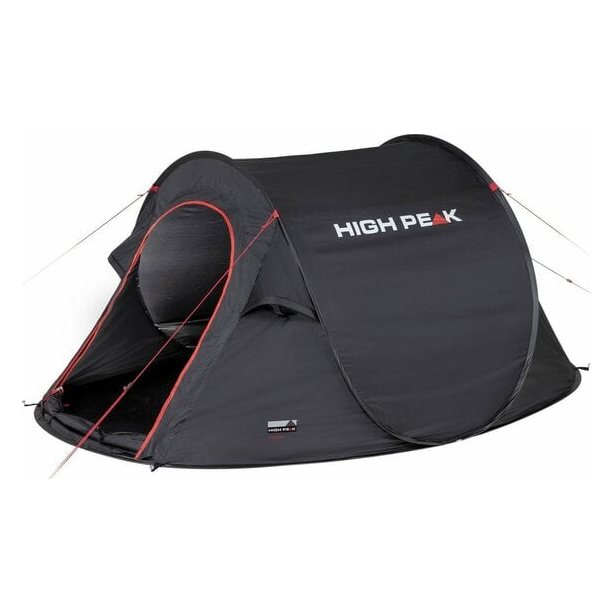
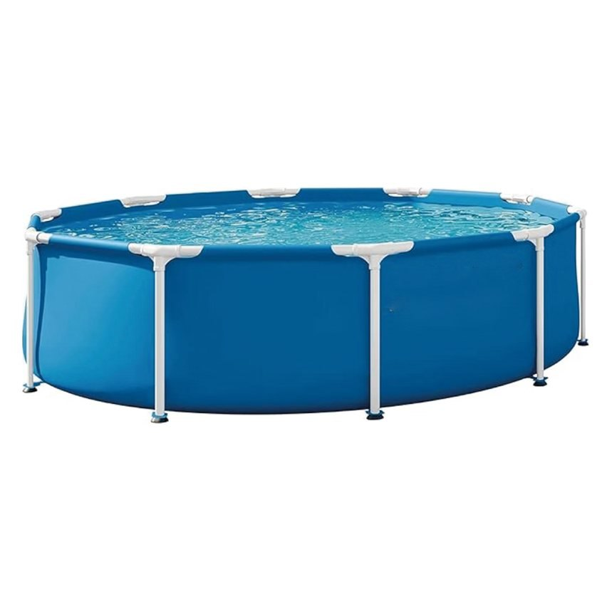
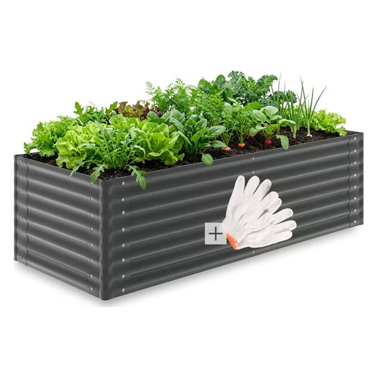
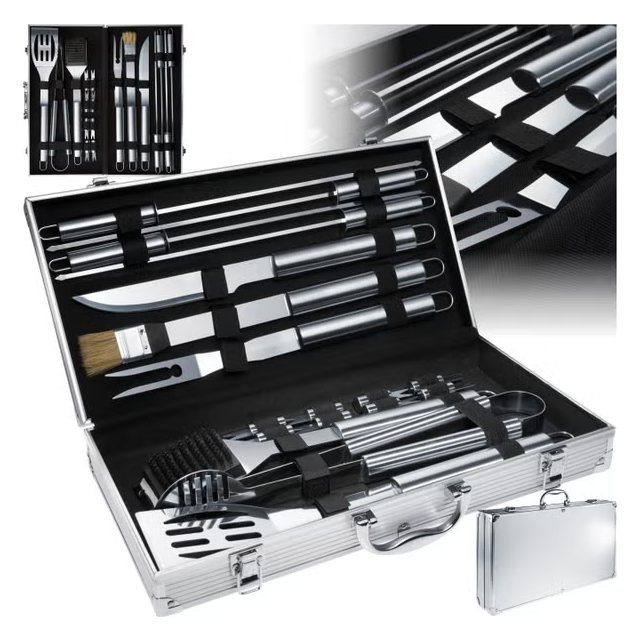
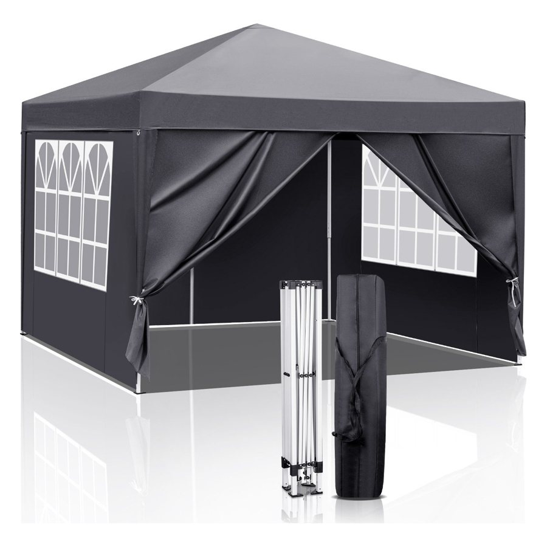
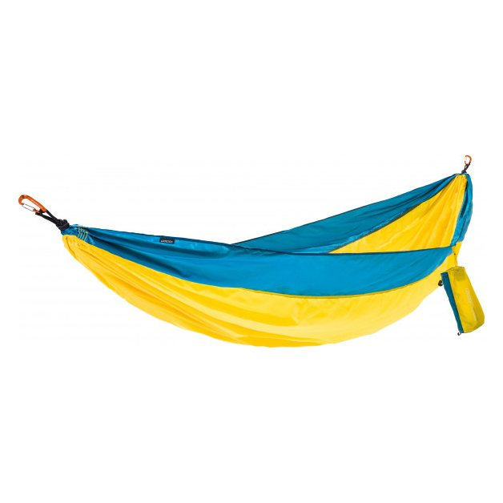
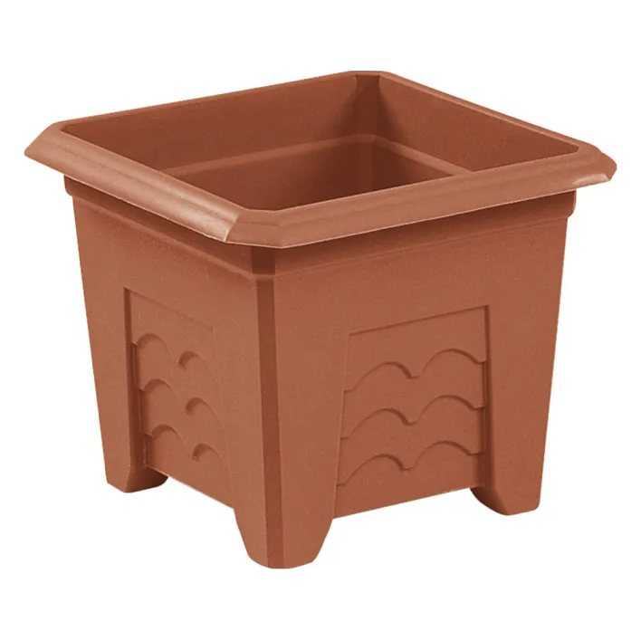
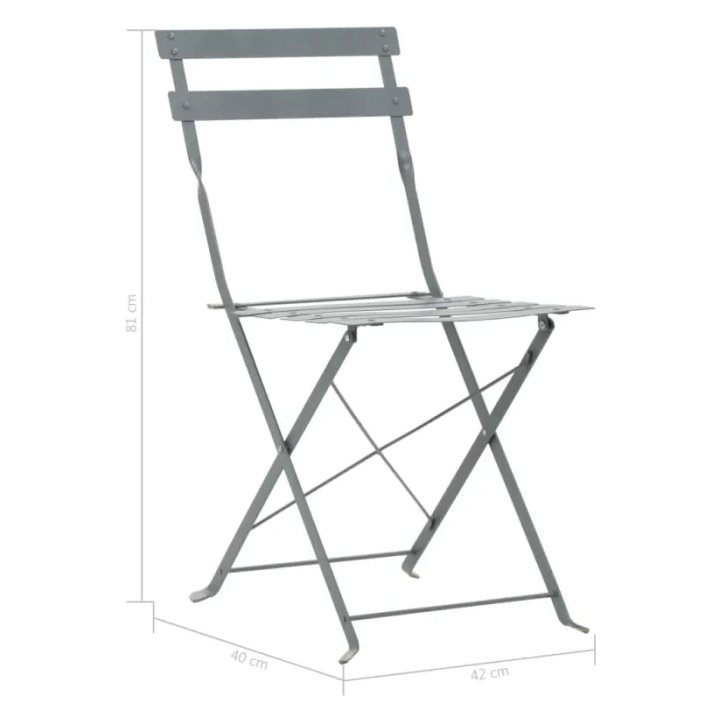
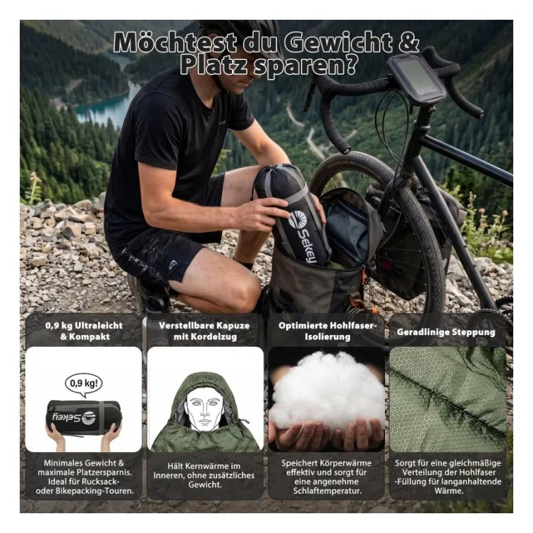

Home / Garden, balcony & camping / Oscillating lawn sprinkler (rectangular)

Illustration similar – shows the product type.
Garden, balcony & camping
Oscillating lawn sprinkler (rectangular)
Plastic oscillating sprinkler with adjustable reach for lawns.
Oscillating lawn sprinkler with 15-19 nozzles, adjustable width and range, standard hose connector. Quality markers are a smooth oscillation mechanism, UV-stable plastic and a brass connector insert. Covers lawns up to about 200 sq m.
Technical data
| Nozzles | 15 or 19 |
|---|---|
| Material | Plastic (ABS/PP) |
| Customs tariff number (HS) | 84248130 |
EU standards and regulations
GPSR (EU) 2023/988General product safety, EU responsible person requiredREACH (EG) 1907/2006Chemicals regulation, SVHC declarationVerpackG / LUCIDPackaging registration in Germany
More products in this category

Flexible expandable garden hose, 15–22.5 m, with couplings and 7-function spray gun

Solar fountain pump / solar pond pump (kit with solar panel and nozzle heads, approx. 180 l/h)Solar-direct kit without battery: panel and brushless submersible pump for bird baths, ponds or ornamental fountains.

Folding camping chair (steel frame, 600D Oxford fabric, cup holder, side pocket)Sturdy folding chair with steel-tube frame, padded Oxford seat and cup holder, packed in a slim carton of only 19 x 19 x 97 cm.

Pop-up tent for 2–3 persons (self-erecting, fibreglass frame, waterproof, carry bag)Self-erecting pop-up tent made of 190T polyester with flexible fibreglass poles, set up in seconds and foldable flat.

Round frame pool set Ø 366 x 76 cm (steel frame, PVC composite liner, cartridge filter)Round above-ground pool set (12 ft x 30 in) with steel-tube frame, multi-layer PVC liner and cartridge filter pump, assembled without tools.

Galvanised steel raised bed, bottomless (garden 240 × 80 × 82 cm, balcony variant 100 × 40 × 77 cm)Bottomless raised-bed module made of galvanised or Aluzinc-coated sheet steel: weatherproof, rust-protected and assembled without special tools.

Stainless-steel BBQ tool and accessory set, 18 pieces in aluminium case

Folding gazebo 3 × 3 m (steel or aluminium frame, polyester, UV 50+, 4 side walls, carry bag, sandbags)3 × 3 m pop-up gazebo with scissor frame, water-repellent polyester roof (UV 50+) and optional side walls: set up in minutes.

Double camping hammock (parachute nylon, tree straps and carabiners, stuff sack)Ultralight double hammock made of parachute nylon with tree straps, carabiners and stuff sack: hung in seconds, packs small.

Rechargeable LED camping lantern (USB-C, battery, dimmable, hangable)Rechargeable LED lantern in retro design with USB-C charging and continuous dimming for tent, terrace and garden table.

Terracotta flower pot, fired clayClassic fired-clay flower pot with drainage hole.

Folding metal bistro set, 3 piecesSpace-saving steel balcony set with table and two chairs.

Cantilever garden parasol 3 m, aluminium frameCantilever parasol with crank, aluminium frame and UV-protective canopy.

Mummy sleeping bag, polyester, 3-seasonLightweight mummy sleeping bag with hood and stuff sack.

Portable camping gas stove (butane/cartridge)Single-burner camping stove for gas cartridges in a carry case.

Folding wagon / garden cartCollapsible hand wagon for garden, beach and camping.

Camping LED string lights, 10 m, USB-C rechargeableRechargeable string lights for tent, terrace and garden.